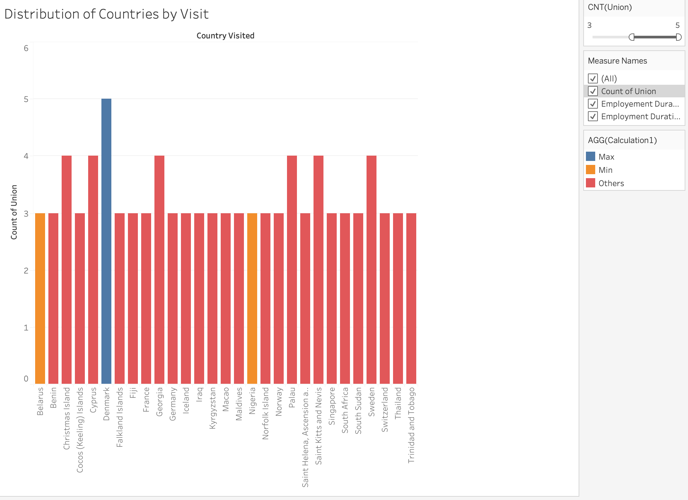
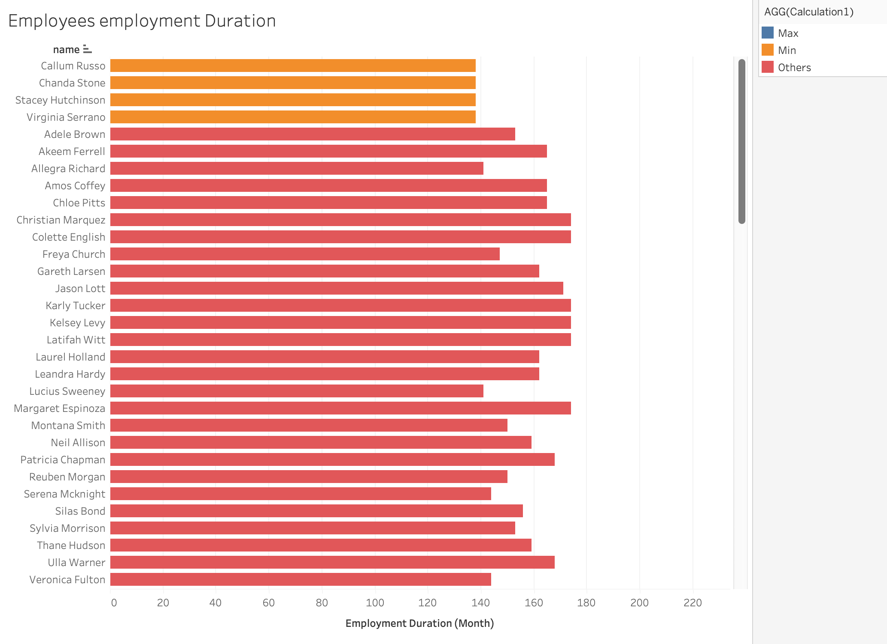

Question 1
Ploting Countries by the amount of visits reveals that of the employees Denmark is the country most traveled to.
Other countries with lower visits are not represented in the plot, because I decided to filter for countries with less than 3 visits. For the sake of only seeing the countries with the most visits.

Question 2
The horizontal bar chart plots employees by their employment duration (month), and bins them into 3 categories: MIN, MAX, and Other.
- MIN (orange): shortest employment duration.
- MAX (blue): longest employment duration.
- Other (red): duration between MIN and MAX.
